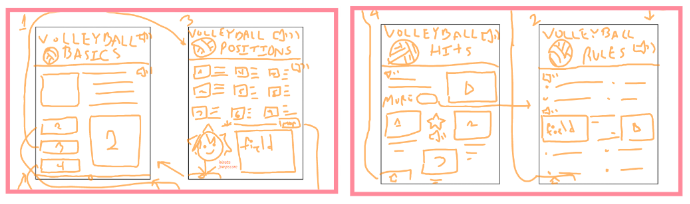
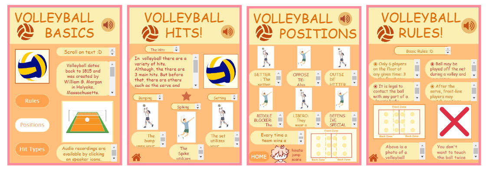

Unit 3 Review & Project
Thomas A. Edison CTE High School
Web Development
Unit 3 Intro to App Design || Reflection
December 2nd, 2022
Maru Puran
Unit 3 Reflection
Lesson 1: Introduction to Apps
In this lesson, we observed apps and got familiar with how they worked as well as inputs and outputs.
Match term with the example:
> Input - The user clicks a button.
> Output - A song is played.
> User Interface - A screen with buttons, images, and text.
Lesson 2: Introduction to Design Mode
In this lesson, we experimented with how designing an app works, getting familiar with the way it is.
Why is it important for element IDs to have meaningful names?
It's important because it makes everything more organized--this makes programming easier because if there's an error with something specific it's easier to figure out which element is where.
Lesson 3: Project Designing an App Part 1
In this lesson, we began to plan out an app and discover the components of what an app should have.
What are some ideas you can come up with for an app?
Some ideas that my partner and I came up with include informing on the basics of volleyball, informing on coding, and informing on chemistry too.
Lesson 4: Project Designing an App Part 2
In this lesson, we took the design that we had from the previous lesson and started recreating it in a coding program, as well as planning out our screens.
There is no CFU question.
Below are some photos of the screens we designed.

Lesson 5: The Need for Programming Languages
In this lesson, we sorted out the differences between coding language and natural language by and as well as using the importance of having specific instructions.
What is the difference between a programming language and a natural (everyday) language?
A programming language is changed to be more specific and better for instructions. This is opposed to natural language, where we use many placeholder words that would not be found in programming such as "there", "that", or words that aren't descriptive. Programming language takes use of precise language in order to make instructions that are clear.
Lesson 6: Intro to Programming
In this lesson, we began to take a look at programming in order to figure out what command does what, what it needs, any specific situations it's useful in, etc.
What is the difference between a sequential program and an event-driven program?
A sequential program happens on its own without anything to prompt it; it goes in chronological order and does what it's directed to after the previous command is done. An event-driven program happens only when something else prompts it. For example, if it's set to happen when something is clicked, then it will only happen once said object is clicked. It doesn't happen in chronological order and is instead dependent on something else within the code.
Lesson 7: Debugging
In this lesson, we watched a video about debugging before trying to do it ourselves in order to familiarize ourselves with how to deal with unintentional results in our coding.
What is one thing you really enjoyed about today's activity?
A sequential program happens on its own without anything to prompt it; it goes in chronological order and does what it's directed to after the previous command is done. An event-driven program happens only when something else prompts it. For example, if it's set to happen when something is clicked, then it will only happen once said object is clicked. It doesn't happen in chronological order and is instead dependent on something else within the code.
Lesson 8: Project Designing an App Part 3
In this lesson, we used pair programming in order to begin coding our apps to run the way that we wanted.
There is no CFU question.
Below are a few photos of the screens we designed.

Lesson 9: Project Designing an App Part 4
In this lesson, we gave the links to our app out and gave each other feedback based on what we saw. We discussed the importance of feedback and why it should be given.
Why is feedback helpful, especially when still creating your app?
Feedback is helpful because it helps us know what essential "consumers" think of our app and what they would recommend us to do next. It gets rid of any bias we might have, as the programmers know how the UI works but maybe the users don't, and it also gives us feedback on the purpose of the app in itself.
Lesson 10: Project Designing an App Part 5
In this lesson, we completed our app and did any last-minute touches while also hearing more feedback again.
There is no CFU question.
______________
The link to the page with the app information is here.